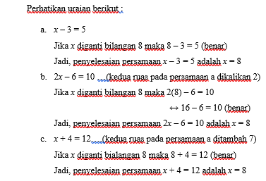

<!DOCTYPE html>
<html lang="en">
<head>
    <meta charset="UTF-8">
    <meta http-equiv="X-UA-Compatible" content="IE=edge">
    <meta name="viewport" content="width=device-width, initial-scale=1.0">
    <title>SPLSV</title>
</head>
<body>
    <style>
    body {
       background-color: #e44e4e;
    }
 
   </style>
   </head>
   </html>
      <P><h1><center><b>SISTEM PERSAMAAN LINEAR SATU VARIABEL</b></center></h1></P>
   </head>
<P><h2> 2.1 Kalimat Terbuka dan Himpunan Penyelesaian Kalimat Terbuka</h2></P>
<p> Kalimat terbuka adalah kalimat yang memuat variable dan belum diketahui nilai kebenarannya. Himpunan penyelesaian dari kalimat terbuka adalah himpunan dari semua pengganti  dari variable-variabel dari kalimat terbuka sehingga kalimat tersebut bernilai benar. </p>
<p>Contoh kalimat yang bernilai benar :</p>
<p>a.	Jakarta adalah ibu kota Indonesia</p>
<p>b.	Gunung Merapi terletak di Jawa Tengah</p>
<p>c.	8 > -5</p>

<P>Contoh kalimat yang bernilai salah  :</P>
<p>a.	Tugu Monas terletak di Jogjakarta</p>
<p>b.	2 + 5 < -2</p>
<p>c.	Matahari terbenam dari arah Timur</p>

<p>     Kalimat terbuka ini terbagi menjadi dua macam yaitu persamaan dan pertidaksamaan :</p>

<p></p>


<p><h2>2.2 Pengertian Persamaan dan Himpunan Penyelesaian Persamaan Linear Satu Variabel</h2></p>
<p> Persamaan Linear Satu Variabel adalah kalimat terbuka  yang dihubungkan oleh tanda sama dengan ( =) dan hanya mempunyai satu variable berpangkat satu, bentuk umum persamaan linear satu variable adalah ax + b = 0 dengan a ≠ 0.</p>
<p>Perhatikan kalimat terbuka x + 1 = 5</p>
<p>Kalimat terbuka tersebut dihubungkan oleh tanda sama dengan (=). Selanjutnya, kalimat terbuka yang dihubungkan oleh tanda sama dengan (=) disebut persamaan. Persamaan dengan satu variabel berpangkat satu atau berderajat satu disebut persamaan linear satu variabel. Jika x pada persamaan x + 1 = 5 diganti dengan x = 4 maka persamaan tersebut bernilai benar. Adapun jika x diganti bilangan selain 4 maka persamaan x + 1 = 5 bernilai salah. Dalam hal ini, nilai x = 4 disebut penyelesaian dari persamaan linear x + 1 = 5. Selanjutnya, himpunan penyelesaian dari persamaan x + 1 = 5 adalah {4}.</p>
<p>Pengganti variabel x yang mengakibatkan persamaan bernilai benar disebut penyelesaian persamaan linear. Himpunan semua penyelesaian persamaan linear disebut himpunan penyelesaian persamaan linear.</p>


<p><h2>2.3 Persamaan-Persamaan Yang Ekuivalen</h2></p>
<p> Dua persamaan atau lebih dikatakan ekuivalen jika mempunyai himpunan penyelesaian yang sama dan dinotasikan dengan tanda “↔”.</p>
<p></p>
<p>Berdasarkan uraian diatas tampak bahwa ketiga persamaan mempunyai penyelesaian yang sama, yaitu x = 8. Persamaan-persamaan diatas disebut persamaan yang ekuivalen .</p>
 <p>Suatu persaman dapat dinyatakan kedalam persamaan ekuivalen dengan cara  :</p>
 <p>a. Menambah atau mengurangi kedua ruas dengan bilangan yang sama</p>
 <p>b. Mengalikan atau membagi kedua ruas dengan bilangan yang sama. </p>


 <p><h2>2.4 Grafik Himpunan Penyelesaian Persamaan Linear Satu variabel</h2></p>
 <p> Grafik himpunan penyelesaian persamaan linear satu variable ditunjukkan pada suatu garis bilangan, yaitu berupa noktah (titik).</p>
 <p></p>


 <p>2.5 Cara Penyelesaian Persamaan Linear Satu Variabel</p>
 <p>Perhatikan permasalahan matematika berikut ini :</p>
 <p></p>
 <p>Raffi dan Maudy adalah kakak beradik, saat umur Raffi 8 tahun lebih tua dari umur Maudy, maka hari ini genap berusia 5 tahun. Berapakah umur Raffi sekarang?</p>
<p>Apa yang kalian ketahui tentang umur Raffi?</p>
<p>Ya, dia 8 tahun lebih tua dari Maudy adiknya, jika seandainya umur Raffi x tahun, perolehan apa yang kita dapat?</p>
<p>Penyelesaian :</p>
<p></p>
<p>Jadi hari ini Raffi berumur 13 tahun</p>


<p><h2>2.6 Ringkasan </h2></p>
<p> Kalimat terbuka adalah kalimat yang memuat variable dan belum diketahuinilai kebenarannya, himpunan penyelesaian dari kalimat terbuka adalah himpunan semua pengganti dari variable-variabel pada kalimat terbuka sehingga kalimat tersebut bernilai benar. Persamaan linear satu variable adalah kalimat terbuka yang dihubungkan oleh tanda “=” dan hanya mempunyai satu variable berpangkat satu, bentuk umum persamaan linear satu variable adalah ax + b = 0 dengan a ≠ 0.</p>
<p> Pengganti variable x yang mengakibatkan persamaan bernilai benar disebut penyelesaian persamaan linear, himpunan semua penyelesaian persamaan linear disebut himpunan penyelesaian persamaan linear. Dua persamaan atau lebih dikatakan ekuivalen jika mempunyai himpunan penyelesaian yang sama dan dinotasikan dengan tanda “↔”</p>
<p>Tiga hal di atas yang menjadi dasar dalam menyelesaikan persamaan linear satu variabel.</p>
<p>Langkah-langkah penyelesaian persamaan linear adalah :</p>
<p>a. Menambah kedua ruas dengan bilangan yang sama</p>
<p>b. Mengurangi kedua ruas dengan bilangan yang sama.</p>
<p>c. Membagi atau mengalikan kedua ruas dengan bilangan yang sama dan bukan nol.</p>
<p>Suatu persamaan linear yang kedua ruasnya ditambah dikurangi, dikalikan atau dibagi dengan bilangan yang sama akan menghasilkan persamaan linear yang setara (ekivalen) dengan persamaan linear semula</p>


<p><h2>2.7 Latihan</h2></p>
<p>1. Tentukan himpunan penyelesaian dari persamaan berikut dengan menambah atau mengurangi kedua ruas dengan bilangan yang sama. Jika variable pada himpunan bilangan bulat.</p>
<p></p>
<p>2. Tentukan himpunan penyelesaian dari setiap persamaan berikut ini</p>
<p></p>


<p><h2>2.8 Evaluasi</h2></p>
<p>1. Tentukan yang merupakan persamaan linear satu variable adalah ……</p>
<p></p>
<p>2. Tentukan himpunan penyelesaian persamaan-persamaan dibawah ini dengan cara substitusi, jika peubah (variabelnya) pada himpunan bilangan bulat…..</p>
<p></p>
<p>3. Tentukan yang merupakan persamaan linear satu variable….</p>
<p></p>


</body>
</html>